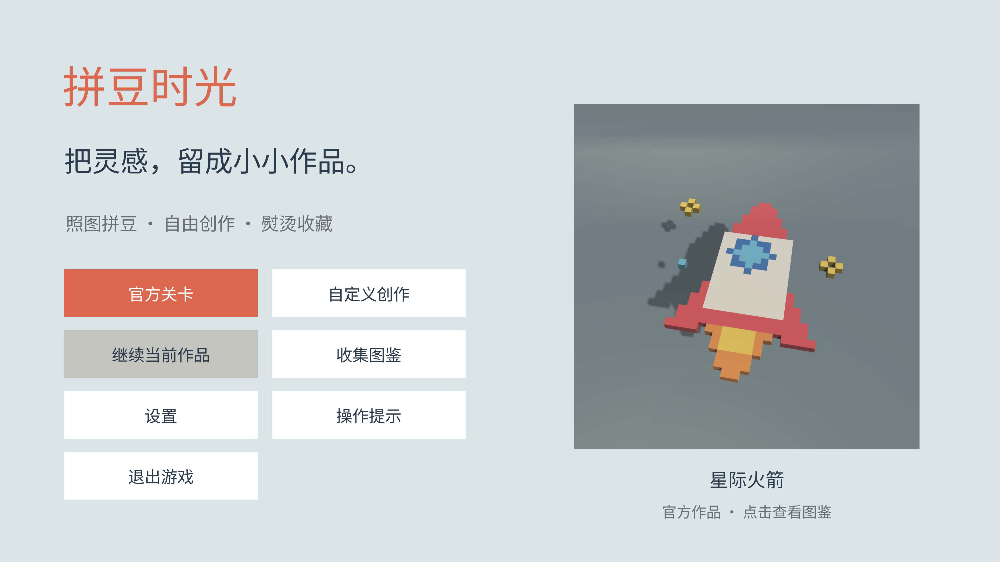
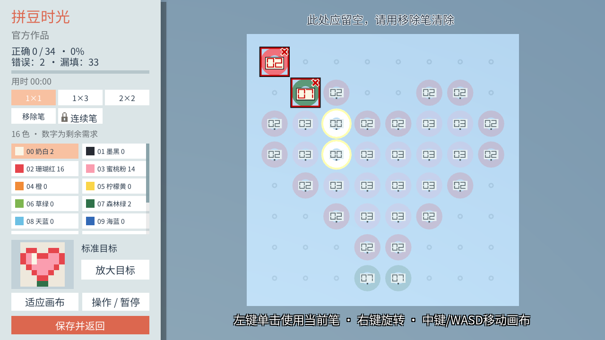
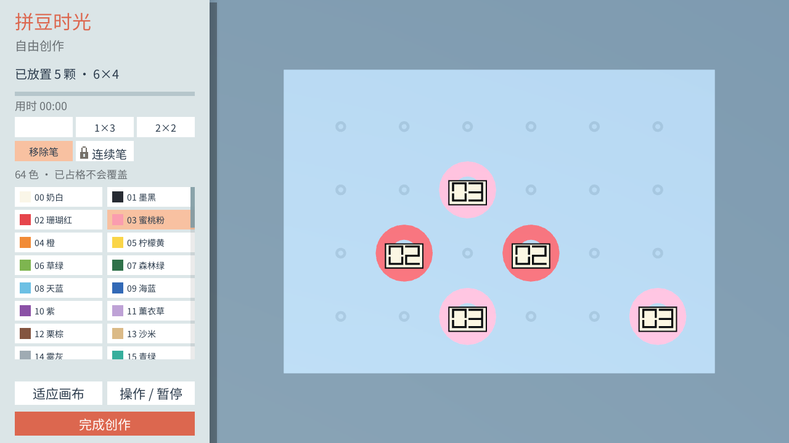
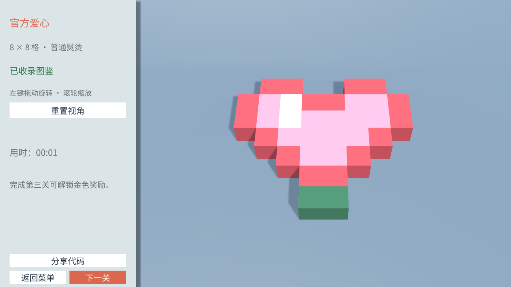
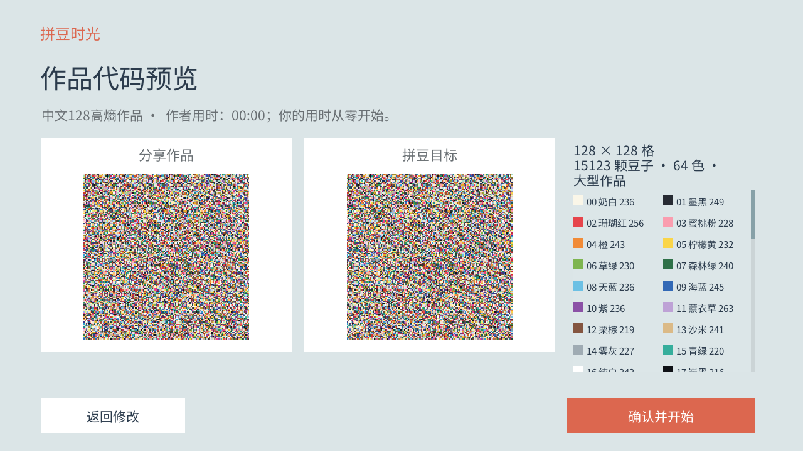
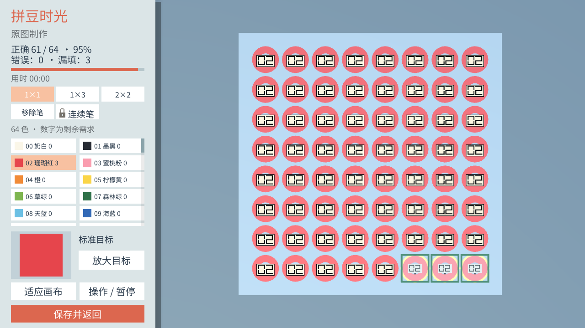
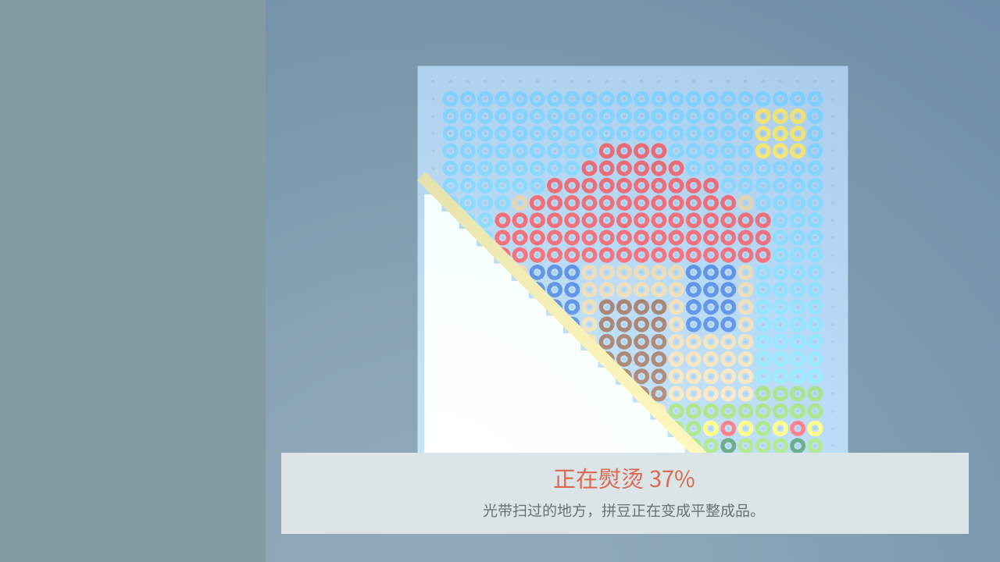

保留手工制作感
普通画笔逐次放置，不直接覆盖已有豆子。不同范围的工具在精细操作与批量放置之间提供选择。
把一颗颗彩色拼豆，
做成可以收藏与分享的作品。
一款基于 Unity 开发的休闲拼豆创作 Demo。从照图制作与自由创作，到熨烫成品、图鉴收藏与离线分享，构成完整的制作体验。
个人独立项目

按制作流程查看真实游戏画面。选择右侧阶段，了解操作、反馈与作品完成后的去向。

当前以实机截图展示，演示视频尚未加入。截图来自 V5 构建的自动验证流程，用于呈现实际渲染与功能状态。
将手工拼豆拆解为可操作的规则，让选择、放置、修正与完成都有清晰反馈。
普通画笔逐次放置，不直接覆盖已有豆子。不同范围的工具在精细操作与批量放置之间提供选择。
照图模式允许放错颜色或位置，用红色色号、边框和标记提示。玩家通过移除后重放完成修正。
熨烫从左下向右上推进，豆孔逐区转为融合表面。完成后进入3D查看与图鉴，留下制作成果。
每项功能都围绕同一份作品数据展开，将创作过程、完成反馈与长期收藏串联起来。
可以从空白画布开始，也可以将图片转换为拼豆目标。图片转换保持原图比例，将图像映射到固定64色色板；自由创作则保留玩家对图案和留白的决定。
我的实现：独立完成图片读取、网格转换、颜色映射及转换结果与棋盘的接入。
转换结果保存为网格颜色数据，原图删除后仍能继续制作。V5记录支持最高128×128自定义网格；最终可下载版本的尺寸范围将在发布包确认后标注。

通过逐区熨烫表现完成过程，生成保留空洞的厚体素成品。透视镜头、哑光材质、三点布光与阴影提供形体层次，作品可旋转查看并永久收录图鉴。
我的实现：独立完成熨烫过渡、成品生成、展示交互与图鉴收录流程。
官方作品按关卡标识去重，重复完成更新用时记录；自定义成品支持独立收藏与确认删除。主页可展示已收藏的作品。

编辑进度和完成作品支持本地保存。成品可生成文本分享码，接收者离线导入后先查看目标预览，再从空棋盘开始制作自己的版本。
我的实现：独立完成存档恢复、作品编码解码、复制导入与数据校验。
保留实体颜色与空白位置，加入版本识别和损坏校验；兼容旧格式。导入作品不直接计为完成，也不推进官方奖励。协议在迭代中升级，展示页不固定旧版本码样式。

我一人负责全部功能的设计与开发，涵盖拼豆编辑、关卡流程、自定义创作、图片转换、熨烫、3D展示、图鉴、离线分享、存档与设置，并完成各系统整合与持续迭代。
制定制作循环、工具规则、完成条件、关卡推进，以及创作、收藏和分享之间的关系。
设计色板、参考图、工具栏和视图操作；以错误提示、剩余量与完成反馈辅助制作。
实现网格数据、图像处理、分享编码、本地保存、熨烫与成品展示，接通完整流程。
根据实际运行问题调整操作、显示和数据规则，进行相关功能验证并整理构建结果。
精选三个迭代案例，展示我如何将体验问题转化为规则与实现调整。
大图接近完成时，少量空位难以寻找，制作节奏容易变成反复搜索。于是加入有条件的末位空格高亮，并允许在设置中关闭。
提示仅提供位置线索，不自动放置；维持手工完成的参与感。

熨烫材质曾遮挡融合区域，成品旋转时地面与视距发生变化。调整显示方式，并让地面、旋转中心与展示视距保持稳定。
已扫区域与未扫区域清晰区分，旋转成品时保持稳定的展示空间。

64种实体颜色加空白，共有65种状态，固定6-bit无法全部容纳。分享协议迭代为能够保留全部状态的编码，并保留旧格式读取。
分享目标完整保留颜色和空洞，导入前进行版本、长度与损坏校验。128×128导入样例用于检查大画布还原。
展示从设计到实现的完整个人项目。全部功能由我独立完成，素材来源与验证方式单独记录。
拼豆网格、成品模型、图案和音效由项目程序生成；中文字体采用 Noto Sans CJK SC（SIL OFL 1.1）。背景音乐为程序化生成。自动截图用于验证功能状态，真人试玩和主观音乐试听未在这些记录中完成。